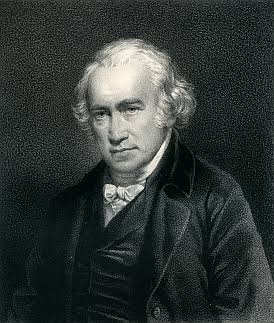
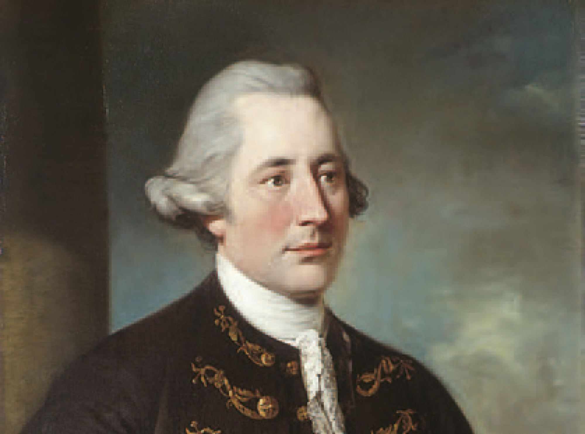
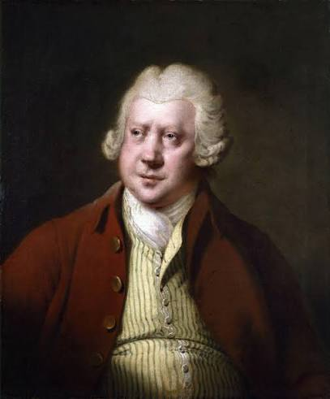
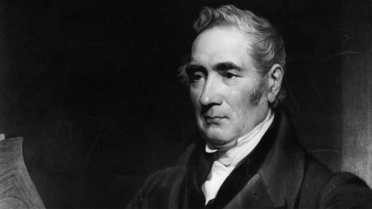

James Watt
Mejoró la máquina de vapor para que consumiera menos combustible y pudiera aprovecharse en más actividades industriales. Aunque no fue su inventor original, sus aportes fueron fundamentales para su desarrollo.
Máquinas que transformaron la sociedad
1760–1840
Comenzar el recorridoLa Revolución Industrial comenzó en Gran Bretaña durante la segunda mitad del siglo XVIII. Las máquinas empezaron a realizar tareas que antes se hacían a mano y muchas actividades que se desarrollaban en pequeños talleres o en los hogares pasaron a las fábricas.
Estos cambios también afectaron la vida de las personas. Muchas se trasladaron a las ciudades para buscar trabajo, mientras los nuevos medios de transporte facilitaron el traslado de productos y pasajeros. Aquí nos centraremos en la Primera Revolución Industrial.

Mejoró la máquina de vapor para que consumiera menos combustible y pudiera aprovecharse en más actividades industriales. Aunque no fue su inventor original, sus aportes fueron fundamentales para su desarrollo.

Fue empresario y socio de James Watt. Contribuyó a financiar, fabricar y vender las máquinas de vapor, lo que ayudó a extender su uso en la industria.

Impulsó la producción de hilo con máquinas movidas por agua. Organizó fábricas que reunían maquinaria y trabajadores, y ayudó a extender esta forma de producción.

Fue uno de los ingenieros que impulsaron el desarrollo del ferrocarril a vapor. Participó en la construcción de la línea Liverpool–Manchester, inaugurada en 1830.

Dirigió las fábricas textiles de New Lanark, en Escocia, donde promovió mejoras en las condiciones de vida y la educación de los trabajadores y sus familias. Defendía que el éxito de una empresa también debía beneficiar a quienes trabajaban en ella.
Selecciona un acontecimiento para explorar qué sucedió y dónde ocurrió.
1769
Lugar: Gran Bretaña.
James Watt patentó una mejora de la máquina de vapor: un condensador separado que permitía enfriar el vapor sin enfriar también el cilindro. Así se reducía el consumo de combustible. Más adelante, junto con Matthew Boulton, fabricó y comercializó máquinas que se utilizaron en distintas actividades industriales.
1800
Lugar: New Lanark, Escocia.
Robert Owen asumió la dirección de las fábricas textiles de New Lanark. Allí promovió mejoras en las condiciones de vida y en la educación de los trabajadores y sus familias. Su experiencia buscaba demostrar que una empresa podía obtener beneficios y, al mismo tiempo, preocuparse por el bienestar de quienes trabajaban en ella.
Fuente: [4].
15 de septiembre de 1830
Lugar: Liverpool y Manchester, Inglaterra.
Se inauguró una línea ferroviaria que conectaba el puerto de Liverpool con Manchester, una importante ciudad textil. Permitió transportar pasajeros, materias primas y productos con mayor rapidez. George Stephenson participó como ingeniero en su construcción.
Fuente: [5].
1833
Lugar: Reino Unido.
El Parlamento británico aprobó una ley para proteger a los menores que trabajaban en determinadas fábricas textiles. La norma limitó sus horarios, estableció obligaciones de enseñanza e incorporó inspectores para vigilar su cumplimiento. Fue un avance, aunque no acabó con el trabajo infantil ni protegió a todos los sectores.
Fuente: [6].
La Revolución Industrial permitió fabricar más productos y transportarlos con mayor rapidez. También cambió la vida de muchas familias que se trasladaron a las ciudades para trabajar. Sin embargo, las largas jornadas, los bajos salarios y los riesgos laborales llevaron a reclamar mejores condiciones de trabajo.
Su importancia no estuvo solo en los inventos. También transformó la organización del trabajo, el comercio y las relaciones entre empresarios y trabajadores. Muchos de estos cambios, como la producción en fábricas y el transporte ferroviario, siguen formando parte de nuestra vida.